Round 17: the chat token's label and the Tokens section
A human makes a chat token on their Notifications page, and their own Claude Code then speaks in one project's chat as that human. This round designs two parts: the label on a human message that came through a token, and the Tokens section with the block that shows the new token once. It is a condensed round built in the lab: the shots are the real console over the lab's tokens scenario, with two tokens (claude-laptop used, nightly-ci never) and a thread in which claude-laptop and the browser both speak. No image model ran. Gemini 2.5 Pro and GLM 5V Turbo judged the same sheets. The brief is brief.md and the full account is notes.md.
The recommendation, provisional: F for both parts. A token's message keeps the human as its author: the avatar becomes a dashed cyan ring around the initial, and the who line reads sebastian via claude-laptop in the muted grey. The answer to the token form shows the block once, at the top of the page: a raised panel with a 2 px cyan rule and the mark "shown once", the claude mcp add line behind a $ prompt with a Copy button, and the bearer with its own Copy button. A lamp beside the last use is lit for a token in use. The form folds once a token exists. Both critics picked F for both parts in the compare loop.
The runner-up is A for both parts: the label as words only, with the filled disc, and the block with boxes that select whole on a click instead of Copy buttons, the form as one row of fields. In the first loop the critics disagreed on the Tokens section's runner-up: Gemini named A, GLM named B. In the compare loop both scored A above B.
The entry is C43, provisional, awaiting Sebastian's confirmation.
The label, before and after
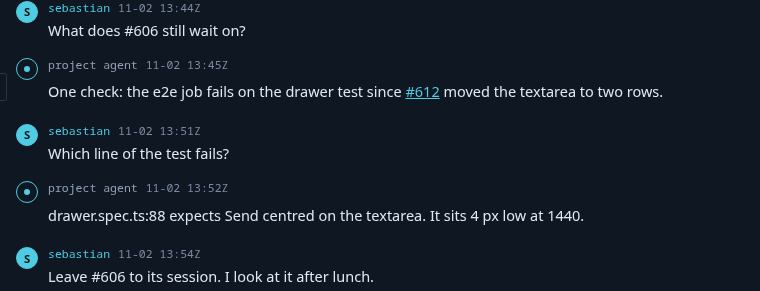
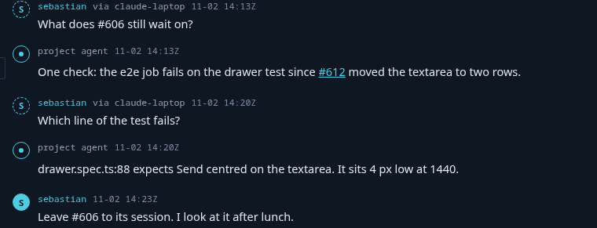
via claude-laptop on the token's two messages, the filled disc on the browser's.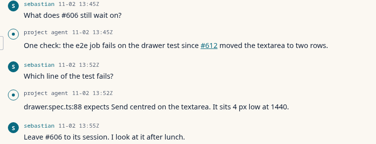
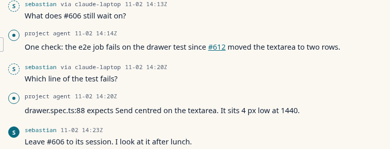
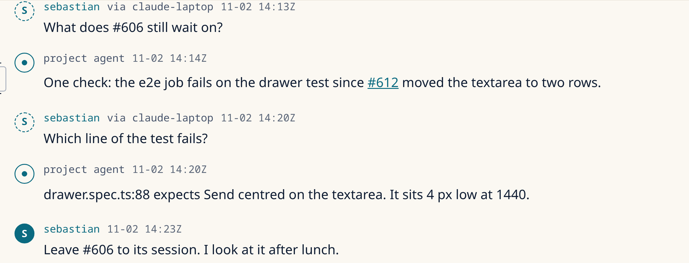
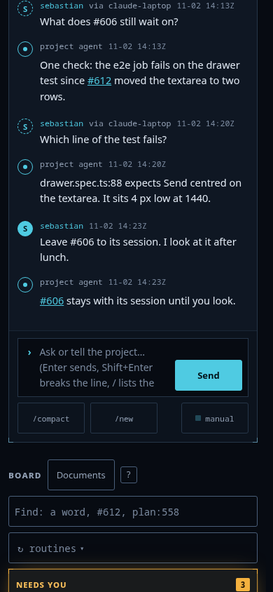
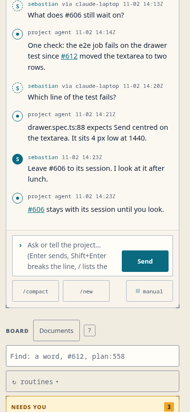
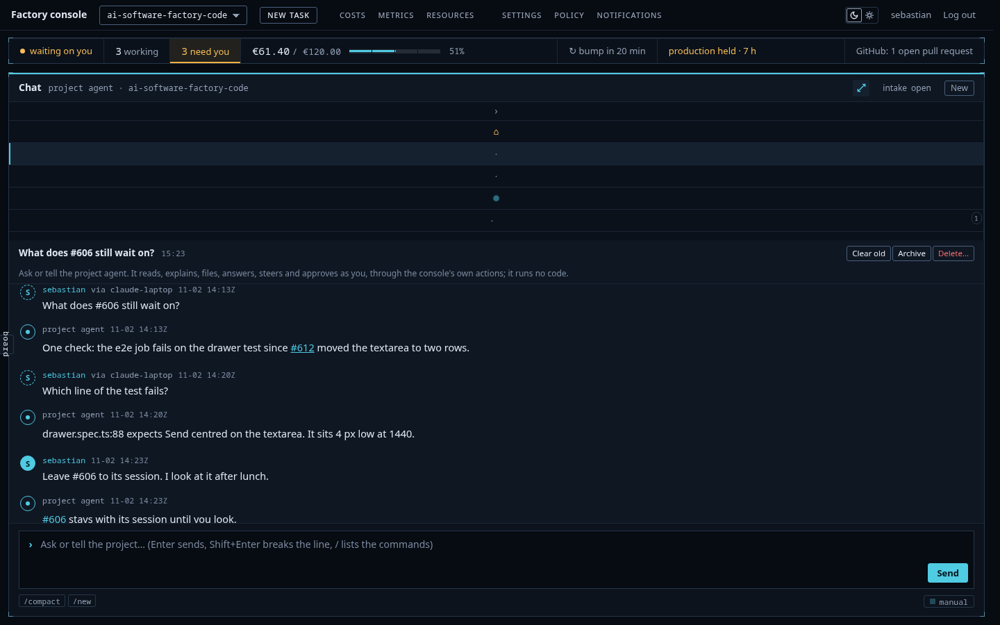
The Tokens section, before and after
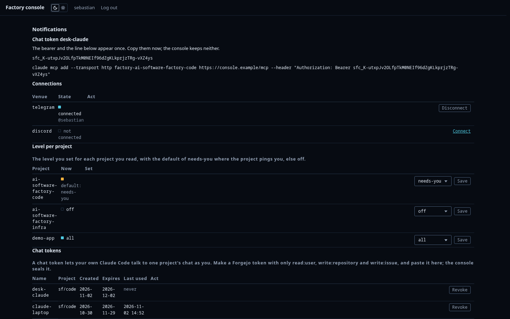
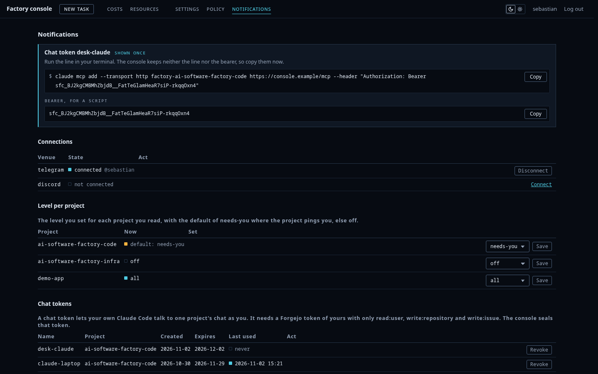
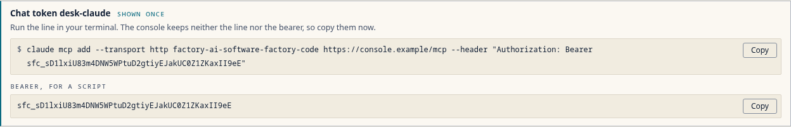
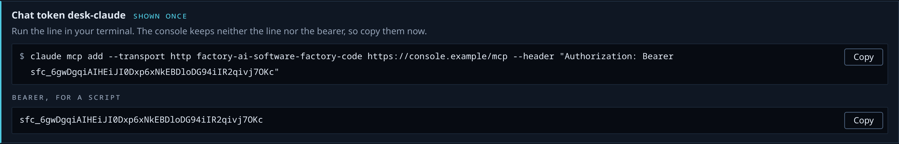
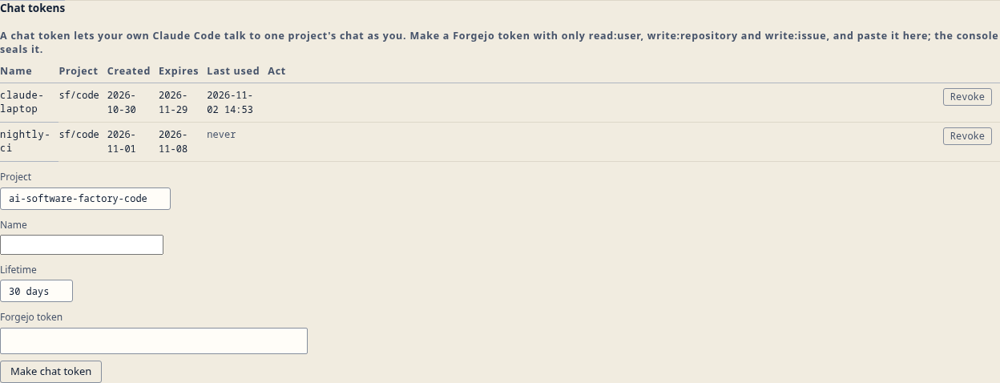
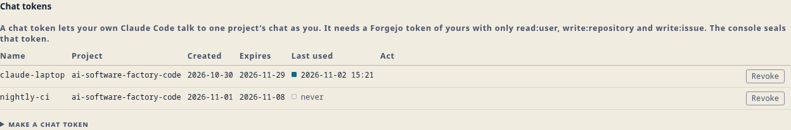
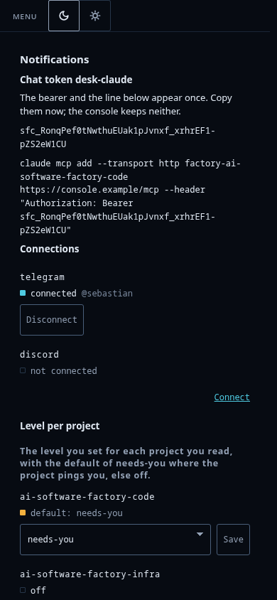
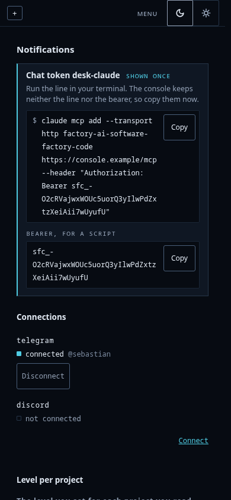
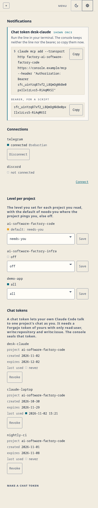
The candidates
Three per part, kept as patches against the base commit: A, B, C, and the pick F. F is C with the first loop's changes: "via" from A, the 2 px cyan rule from A on the block, the bearer under its own label, the field names on the phone, a guard for a refused clipboard.
| Part | Candidate | What it is |
|---|---|---|
| Label | A | via claude-laptop in muted grey after the name |
| Label | B | the token's name as a bordered chip after the name |
| Label | C | the avatar as a dashed ring, and · claude-laptop after the name |
| Tokens | A | the block on top, values in boxes that select whole, a lamp on the last use, the form in one row |
| Tokens | B | the block inside the table under the new row, the answer scrolled to it, a lamp before the name, the form as label-beside-field rows |
| Tokens | C | the block on top as a command panel with Copy buttons, a lamp on the last use, the form folded once a token exists |
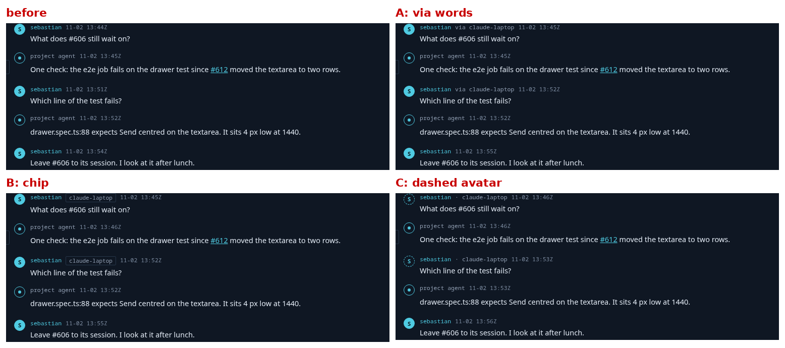
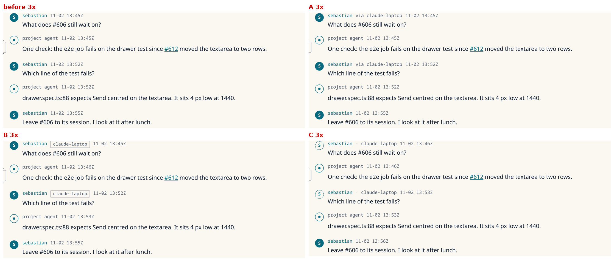


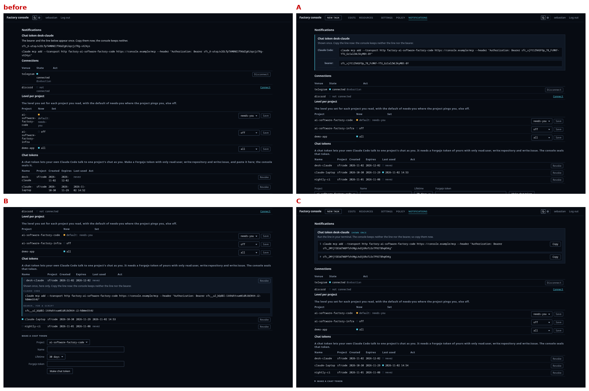
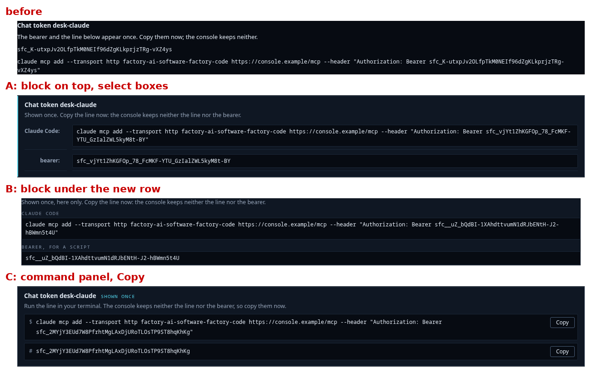


What the critics said
The first loop ranked all three per part. Both put C first for both parts.
| Part | Gemini | GLM |
|---|---|---|
| Label | C, A, B | C, A, B |
| Tokens | C, A, B | C, B, A |
The compare loop scored F against the runners-up. Both picked F for both parts.
| Part | Candidate | Gemini score | GLM score |
|---|---|---|---|
| Label | F | 9 | 7 |
| Label | A | 6 | 6 |
| Tokens | F | 9 | 9 |
| Tokens | A | 6 | 7 |
| Tokens | B | 3 | 5 |
The answers of the first loop: label Gemini, label GLM, tokens Gemini, tokens GLM. The compare loop: label Gemini, label GLM, tokens Gemini, tokens GLM. The compare sheets are in compare/.
The director checked twelve claims against the pixels and overruled them or found them already met, among them amber for "shown once", a 4 to 8 px rule on the block, and the claim that the dashed ring blurs into a solid one at 1x. notes.md lists each with its reason.
Fixes found on the way
The lab's structural check was red at the base commit, the lab answered 404 to the page's forms, the page showed no destinations in the top bar, light selects lost their chevron, the page's tables broke names and dates over lines, the Name field had no field style, and a row header drew a darker rule than its row. The build fixes all seven. notes.md has the detail.
Cost
Eight critic calls, about $0.24 of the $3 cap. No image generation.